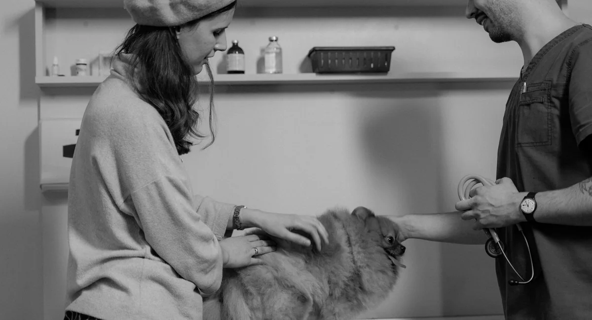
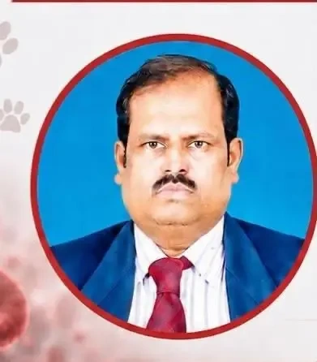
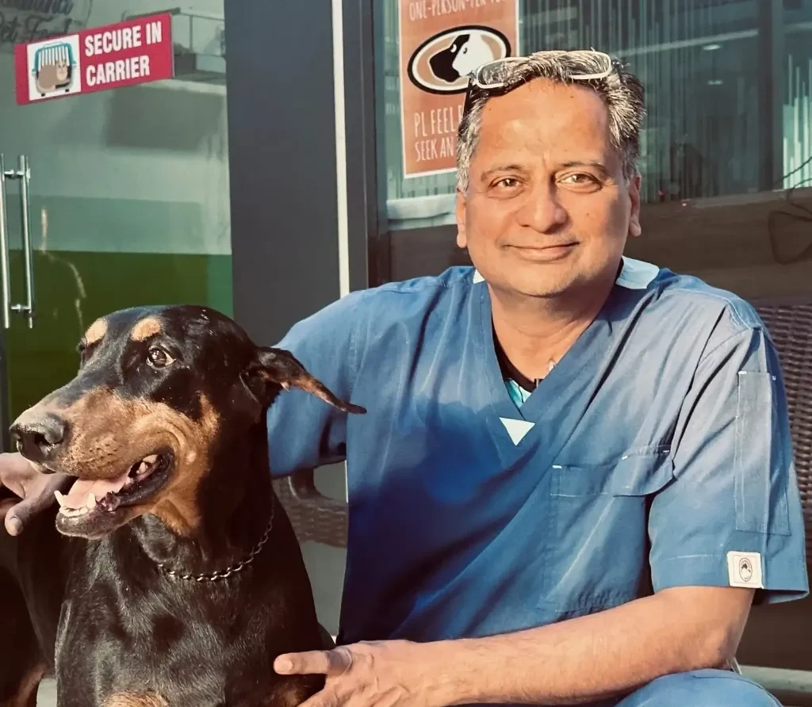

Bridging Knowledge. Building Skills. Transforming Veterinary Practice.
Empowering veterinary professionals through practical education, clinical skill development, and continuous professional learning.


How Vetnova Born
Veterinary education provides the foundation of knowledge, but translating that knowledge into confident clinical practice requires structured, hands-on learning and continuous skill development.
VetNova Training Institute was envisioned to bridge this gap in India by creating a dedicated platform where veterinary students, fresh graduates, practising veterinarians and veterinary nursing professionals can develop practical competencies, enhance clinical confidence and advance their professional capabilities.
The vision for VetNova emerged from the need to connect classroom learning with real-world clinical demands through focused training, experienced mentors and competency-based education. By bringing together veterinary expertise, practical learning and industry collaboration, VetNova aims to make continuing professional development more accessible, relevant and impactful.
Our objective is to nurture skilled, confident and compassionate veterinary professionals. Looking ahead, VetNova aspires to build a recognized centre of veterinary learning and excellence in India, fostering national and international collaborations while contributing to better clinical practice, animal welfare and the advancement of veterinary healthcare.
Our Mission & Vision
Guiding our commitment to clinical veterinary excellence and professional advancement across India.
Our Mission
To bridge the gap between veterinary knowledge and clinical practice through competency-based, practical education and continuous professional development.
Our Vision
To become a trusted centre of veterinary learning and excellence in India, shaping competent, confident and compassionate professionals who advance animal healthcare.
Our Core Values
Four principles that guide how we teach, collaborate and grow.
Competence through Practice
Prioritizing hands-on learning, clinical skills and the ability to apply knowledge in real-world situations.
Lifelong Learning and Excellence
Encouraging continuous improvement, evidence-based practice and professional growth.
Compassion and Responsibility
Promoting ethical practice, animal welfare and responsible veterinary care.
Collaboration and Shared Growth
Building meaningful partnerships among educators, practitioners, institutions and industry.
Our Approach to Veterinary Education
How VetNova connects theoretical knowledge, practical skill development, expert mentorship and structured career-stage learning.
From Knowledge to Clinical Competence
Veterinary excellence begins with theory, but true clinical confidence is forged in the procedure room. Our educational model connects classroom understanding with tactile execution through case simulations, supervised procedure handling, and structured diagnostic workflows that prepare clinicians for everyday patient challenges.
Flexible Learning. Meaningful Practice.
Recognizing the intensive schedules of working veterinarians and students, we integrate digital theoretical preparation with in-person clinical wet-lab sessions wherever the curriculum supports a hybrid format. This structure ensures foundational learning is flexible while preserving uncompromising tactile standards during in-person training.
Learn with Experienced Veterinary Mentors
Clinical intuition develops best when guided by practitioners who navigate complex cases daily. Trainees learn directly from seasoned veterinary educators and clinical specialists through procedure demonstrations, structured case reviews, constructive feedback, and small-batch mentorship focused on sound medical judgement.
Learning Pathways for Every Career Stage
Professional growth is an evolving journey. VetNova provides structured, progressive curricula tailored to veterinary students building basic dexterity, recent graduates transitioning to independent practice, established clinicians mastering advanced interventions, and veterinary nurses developing specialized patient care capabilities.
Meet Our Advisory Board
Guiding VetNova with decades of clinical practice, global academic distinction, and surgical excellence.
Dr. Purushottam Narute, DVM, PhD
Veterinarian | Biomedical Researcher | Veterinary Practice OwnerAccomplished veterinarian and translational biomedical researcher with extensive international training in infectious diseases, molecular immunology, and clinical practice ownership. Facilitates clinical examination guidance through AAVIO.

Dr. M. Chandrasekar
Professor of Veterinary Clinical Medicine | Small Animal Internal Medicine SpecialistSenior academician and clinician at Madras Veterinary College (TANUVAS), renowned for performing the first-ever hyena blood transfusion in Indian zoological history and leading DBT-funded research in veterinary oncology.
Dr. Shantibhushan "Shanti" Jha
Associate Professor of Small Animal Orthopedic Surgery | DACVSBoard-certified veterinary surgeon (DACVS) and Associate Professor of Small Animal Orthopedics at Oregon State University, specializing in complex fracture fixation, total joint arthroplasty, and international AO VET faculty training.

Dr. V. M. Chariar
Founder & Chief Veterinary Surgeon | Specialist in Small Animal Surgery, Radiology & AnaesthesiaPioneering small animal veterinary surgeon with four decades of surgical excellence, renowned for introducing laminar airflow clean-room surgical suites, serving as honorary surgeon to the Mumbai Police Dog Squad, and holding Limca Book records.
Dr. Nitin V. Kurkure
Director of Research, MAFSU | Renowned Veterinary Pathologist & Infectious Disease SpecialistDistinguished scientist with 35+ years of veterinary research leadership, 204 high-impact peer-reviewed publications, national DBT CREST awards, and extensive leadership across poultry pathology, oncology, and One Health diagnostics.
Kallahalli Umesh, MVSc, MSc (England)
Small Animal Clinician, Educator & Scientific Communicator | President, National Veterinary FoundationInternational clinician and educator with over 1,250 invited lectures, pioneer of Asia's premier continuing veterinary education program (MCVPD), former Scientific Affairs Manager at Mars Petcare, and President of the National Veterinary Foundation (NVF).